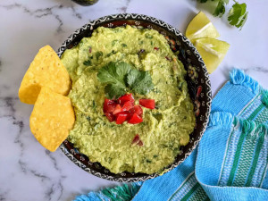

Guacamole

Description
This guacamole recipe gets a tasty kick from cayenne and cilantro. You can serve it smooth or chunky depending on your tastes.
Serve with homemade tortilla chips.
Ingredients
- Avocados, pealed, 3 units
- Lime, juiced, one unit
- Salt, one teaspoon
- Onion, diced, half a cup
- tomatoes, diced, 2 units
- Fresh cilantro, choipped, 3 tablespoons
- garlic, minced, one teaspoon
- cayenne pepper, op`tional, one pinch
Steps
- Mash avocados, lime juice, and salt together in a medium bowl; mix in tomatoes, onion, cilantro, and garlic. Stir in cayenne pepper.
- Serve immediately, or cover and refrigerate for 1 hour for improved flavor.